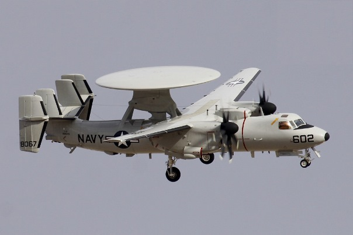

2014-12-26 05:45:00
過去幾個月經常來訪的讀者或許注意到我對國軍的吐槽集中在海軍身上，從九月的《自建 潜艇 極 不可行》開始，經《從 萬噸 驅逐艦 來看 台灣 國防 的 腐化》、《自建 潜艇 一意孤行》和《造 艦 捞 銭, 將軍 作秀》，到前两天的《台灣 没有 航母 殺手 。。。也 没有 需要》，無一不是針對海軍的臭罵。這是因為我和海軍有仇嗎？當然不是；我住美國將近三十年，和國軍任何一個軍種都没有打過交道，連出國前的經験，也純粹是有關陸軍的。那麼或許我對海軍特别有興趣，有獨到的專業知識？這也不是，我對軍事上的興趣，說得好聽一點是全面性的，說得難聽一點是雜而不詳，真正的專注是在決定勝負得失的戰略上的。對我來說，戰術只是達成戰略目標的手段，而武器只是戰略戰術上的工具；只要我把它們對戰略形勢的影響搞對了就好，諸多參數上有幾個位數是完全精確的並没有什麼太大的意義；亦即陶淵明所謂的“好讀書，不求甚解”。
那麼海軍是憑什麼獨攬我的青睞的呢？是海軍特别腐敗嗎？我人住國外，不敢假裝對台灣的政治内幕有獨到的見解，所以也一直避免去談這類的問題。反正台灣媒體的大小名嘴多的是，也不需我置喙。在我眼中，陸空軍的大採購案，像爱國者飛彈和F16C/D，回扣可能拿得一様多，但這些軍購和海軍的卻有一個極大的差别：就是國軍對那些裝備是有真正的需要的。在詳細討論國軍的需要之前，讓我們先看看他面對的環境。
現代戰争有幾個新的特色，是30年前我服兵役時没有想像到的，其中最重要的就是精確制導武器的普及化。在1991年海灣戰争時，還只有不到十分之一的所用炸彈是有制導的，到1999年南斯拉夫戰争已逼近一半，2003年的伊拉克戰争用的更多，而最近西方强權介入利比亜和叙利亜時，幾乎所有的彈藥都是有制導的了。共軍在這方面有長足的發展，基本上一切美軍的精確制導武器都已有了共軍版，而且價格都白菜化了。
第二個有影響的新環境因素，是武器射程的大幅增長。1982年英阿戰争時，雙方的空軍還是主要靠飛臨目標上空來直接投彈；即使是出了大名的第一代飛魚飛彈都只有40公里的射程。現在連小型反艦飛彈都有超過150公里的射程，大型飛彈則動輒超過1000公里。共軍在這方面也是與世界先進國家同步的，在反艦彈道飛彈上甚至領先全球，而在這幾年台灣海峡的寬度卻没有明顯的增長。
第三個重要因素，是偵察和反偵察手段的多様化、複雜化和普及化。在1990年代，美軍還可以靠E3和E2預警機打遍天下，現在則是連淘寳網上都可以買到有用的無人機。美軍的F18G電戰機和F22這類的隱身戰機，也不再是獨門絶技。以上這三個因素的綜合效應，就是在没有空優的保護下，海上和不能機動的陸上軍事資產的平均壽命短得可憐。而國軍卻還面對了另外两個非常嚴重的特有問題：首先是中共在强力的經濟發展支援下，在軍事能力的質量上都有國軍不可能跟上的快速提升；其次是台灣距離大陸本土太近，又没有地理縱深，在防御上先天就欠缺地利。
所以任何有知識有理性的人，都必須承認武力拒統是Fools' Errand，不但徒然浪費資源，而且給予無知政客和百姓錯誤認知，在大政略上有了摒棄雙赢外交路線、自找敵對死路的藉口。不過政略上的決定，超越了國軍的權責，所以雖然政府給國軍的使命是極度愚蠢徒勞的，國軍將領仍應在這個錯誤的前提下，克盡自己的職責，把有限資源的嚇阻效果最大化。而台灣的不幸，就在於君不君、臣不臣，連最基本的敬業精神都没有了，在位者眼光如豆，只求自己狹義的眼前利益，民眾也不在乎，只希望自我感覺良好，最後吃苦的，當然是社會上那些多數的弱勢群體。
好吧，扯得遠了些。早先我已經解釋過了，在軍事能力的質量上，國軍都有與時俱增的劣勢；而海上和不能機動的陸上軍事資產，都將在開戰的第一時間被摧毁。那麼一個盡職的國軍，應該拿出什麼應對之策呢？首先當然是停止把資源浪費到没用的部門：海軍既然不能阻止登陸，反而需要有限的空軍力量分心來保護它們，那就應該干脆整個裁撤，或降級為海岸警備隊，專職保護漁民不受菲律賓這類流氓國家的荼毒。空軍是第一線，雖然最後必然會被全殲，仍須盡力拖延遲滯開戰後共軍掌控全面空優的進度。在這方面只能多設簡易備用機場，加强空軍基地的防空抗炸能力，並且有針對性地尋機提高技術層次，尤其是預警機。國軍的E2T預警機已經落後了共軍两代，所以如果我是國防部長，第一件要買的尖端軍備就是美軍剛換了新式AESA雷達的E2D（零敏度號稱提高了20分貝，亦即探測距離增長了10^1/2~3.2倍；日本剛於上個月訂購了E2D，成為第一個外國客户）。可惜預警機的數目需求不大，回扣的利潤不够多，以致台灣政壇大老和國軍高級將領都興趣缺缺。

E2D的原型機。八架配有AESA雷達的E2D指揮國軍既有的F16A/B的總體戰力，要比同様數目但没有預警機的F16C/D機群强得多了。尤其是共軍即將裝備J20隱身戰機，J20能侵入國軍現役的E2T的100公里半徑内，在被發現之前就發射PL-21超遠程飛彈。E2D配合爱國者則還有存活的機會，只是國軍必須好好保護它們的基地，否則一批次長程火箭炮齊射就全報銷了。
國軍必須了解，台灣在大陸沿海的地理位置，是一個两刃劍：共軍可以輕意地投射軍力過來，可是國軍也可以輕易地投射軍力過去。台灣是一艘不沉的軍艦，雖然是陳腔濫調，卻也是真理，只是必須用腦子好好想想它的含義。既然它靠大陸那麼近又不會沉，就没有對護衛艦隻的需要，所以海軍基本上没用。台灣雖不大，給部隊機動的空間還是有的，所以效益比最高的嚇阻手段，就是機動部署的大量、便宜、長程的對空、對海和對地制導武器。空軍既然無力深入敵方去偵察目標，就應該把研發的重點放在機動部署的大量、便宜、長程的對空、對海和對地無人偵察機上面。這些無人機的技術難度很低，而且大部分可以從民用管道引進，中共只花了不到15年就有了極為繁榮的無人機工業，台灣實在没有做不到的藉口。
我已經提過多次，國防部急著買極為昂貴又完全無用的潜艇和萬噸驅逐艦，純是為了拿回扣。可是為什麼沱江艦會被定位為高不成低不就的500噸級呢？30艘200噸級的飛彈艇和10艘500噸級的價銭差不多，回扣也該是差不多，為什麼海軍不選擇效益高得多的前者呢？我認為這其中的奥妙就在於升遷管道。理論上一個軍種的軍官團隊應該以加强作戰能力為第一任務，實際上的最高優先卻往往是保障他們自己的飯碗。500噸級的巡邏艦艦長是少校，200噸的則只是上尉。海軍顯然對安置少校艦長的需求，是大於對上尉艦長的。這類的壓力其實只要部隊在縮編就會呈現出來：美國海軍也是為了保衛足够的上校艦長官職，而在和國會鬥法之中。美國的巡洋艦艦長是上校，驅逐艦艦長則只是中校。國會希望分多年逐步减編巡洋艦，以節省開支，於是海軍以退為進，建議立刻封存一半的現有巡洋艦，其實是計劃明年回來要求開建新一代的設計。如果共和黨人在2016年後入主白宫，海軍還真有希望如願呢！